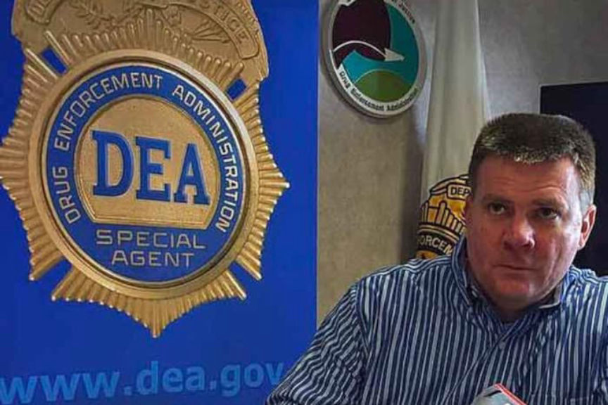
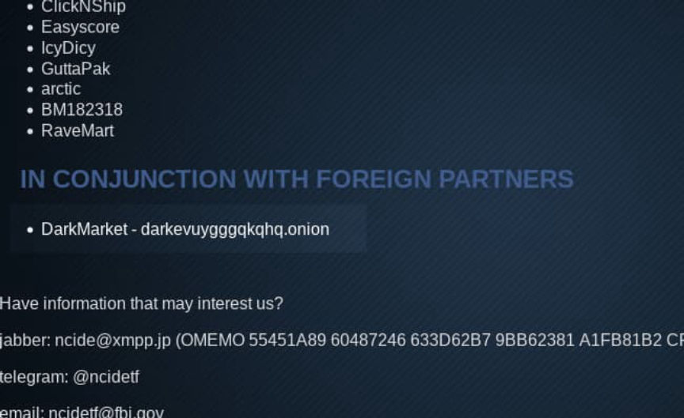
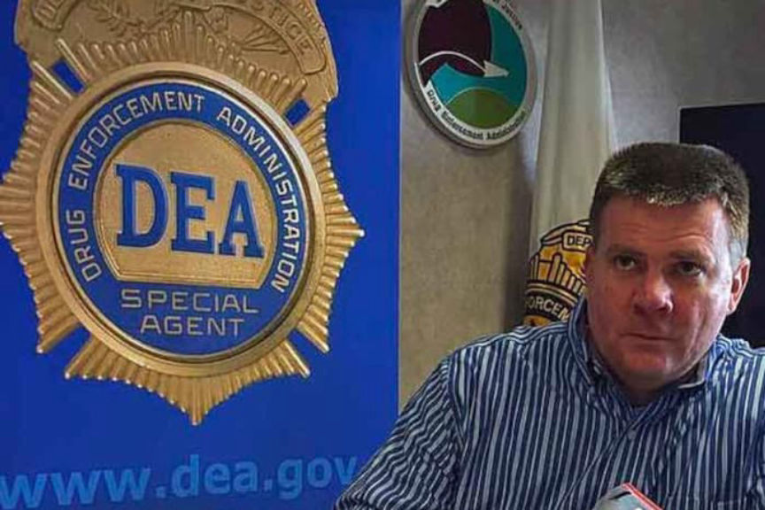
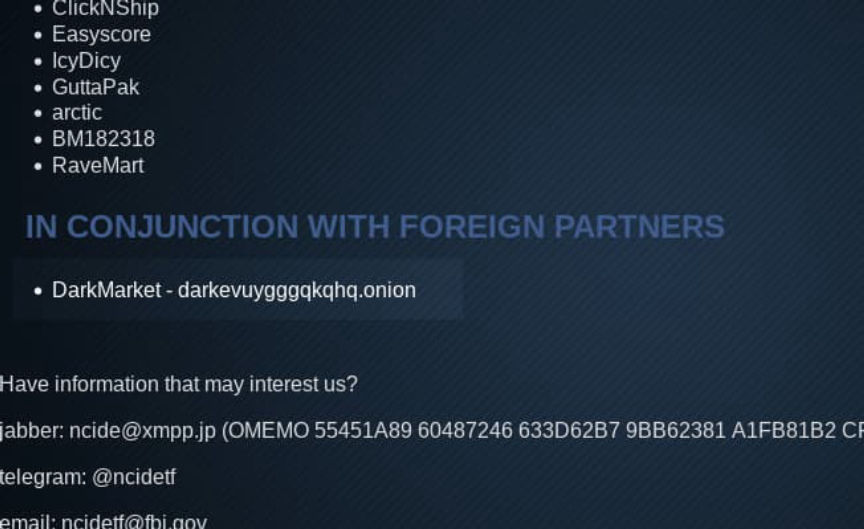

Two Indicted for Selling Fent Analogues in Canada1 Case
~3 min read | Published on 2022-06-01, tagged Darkweb-Vendor, Indicted using 578 words.
A recently unsealed indictment accuses two people of selling fentanyl analogues on Dream Market under the username “Canada1.”
Thomas Michael Federuik, 59, of Vancouver, British Columbia, Canada, and Paul Anthony Nicholls, 44, of Surrey, England, have been indicted in the Southern District of Georgia on drug distribution and money laundering charges.
The indictment charges both defendants with one count of Conspiracy to Import Controlled Substances, Conspiracy to Distribute Controlled Substances, and Money Laundering Conspiracy.
“Pills in the underground drug market and on the Dark Web are often diluted with dangerous and deadly substances like fentanyl, as was the case in this investigation,” said Robert J. Murphy, the Special Agent in Charge of the DEA. Atlanta Field Division. “There is no quality control in the process, so there’s a high chance that users will receive a deadly dose of fentanyl. The success of this investigation was made possible because of the collaborative efforts between all law enforcement agencies involved.”

According to the indictment, the defendants sold U-47700 and U-49900 through Dream Market under the username “Canada1.”

The investigation into Canada1 began in October 2017 after two U.S. Navy petty officers in Kingsland, Ga., fatally overdosed on a fentanyl analogue. Investigators learned that the two people who had overdosed–referred to in the indictment as B.J.T. and T.L.B.–had ordered the analogue from Canada1. They also learned that the vendor had shipped the drugs in packages labeled “East Van Eco Tours” and “Bridge City Consulting L.L.P.”
“The U.S. Postal Inspection Service’s objectives are to preserve the integrity of the nation’s mail system from criminal misuse, rid the mail of illicit drugs, and to keep our communities safe,” said Juan A. Vargas, Acting Inspector in Charge of the U.S. Postal Inspection Service Miami Division. “Postal Inspectors will work with our law enforcement partners to combine resources and expertise to achieve a common goal, which is to combat the perils of illegal and dangerous drug distribution and ensure perpetrators of such attempts are brought to justice.”
The Royal Canadian Mounted Police (RCMP) determined that the defendants had created or used those companies. The indictment accuses both suspected drug dealers of creating companies to facilitate the importation of fentanyl analogues from dealers overseas.
Both defendants are in custody pending extradition hearings.
The court documents do not reveal much about the case. The press release from the U.S. Attorney’s Office for the Southern District of Georgia just regurgitates the same limited information.
If convicted of the charges, both defendants face a mandatory minimum sentence of 10 years in prison, up to life.
“The case is being investigated in Canada by U.S. Homeland Security Investigations, Vancouver; the Royal Canadian Mounted Police and its Online Undercover Operations Unit and Federal Serious and Organized Crime Unit, Cybercrime Operations Group; Calgary Police Service; and the Canada Border Service Agency.
“In the United Kingdom, assistance was provided by the National Extradition Unit with the Metropolitan Police and the Staffordshire Police.
“And in the United States, by the U.S. Food and Drug Administration Office of Criminal Investigations; the U.S. Naval Criminal Investigative Service; Homeland Security Investigations Savannah; the U.S. Drug Enforcement Administration; and the U.S. Postal Inspection Service, with assistance from the U.S. Marshals Service. The U.S. Department of Justice’s Office of International Affairs is providing significant assistance.”
[em]Two men indicted for international conspiracy to ship Fentanyl, other drugs into United States through Dark Web connections[/em] | archive.is, justice.gov
Indictment: pdf
Thomas Michael Federuik, 59, of Vancouver, British Columbia, Canada, and Paul Anthony Nicholls, 44, of Surrey, England, have been indicted in the Southern District of Georgia on drug distribution and money laundering charges.
The indictment charges both defendants with one count of Conspiracy to Import Controlled Substances, Conspiracy to Distribute Controlled Substances, and Money Laundering Conspiracy.
“Pills in the underground drug market and on the Dark Web are often diluted with dangerous and deadly substances like fentanyl, as was the case in this investigation,” said Robert J. Murphy, the Special Agent in Charge of the DEA. Atlanta Field Division. “There is no quality control in the process, so there’s a high chance that users will receive a deadly dose of fentanyl. The success of this investigation was made possible because of the collaborative efforts between all law enforcement agencies involved.”

Robert J. Murphy, the Special Agent in Charge of the DEA. Atlanta Field Division
According to the indictment, the defendants sold U-47700 and U-49900 through Dream Market under the username “Canada1.”

Nobody is able to find sites on the darknet. They are just that hidden.
The investigation into Canada1 began in October 2017 after two U.S. Navy petty officers in Kingsland, Ga., fatally overdosed on a fentanyl analogue. Investigators learned that the two people who had overdosed–referred to in the indictment as B.J.T. and T.L.B.–had ordered the analogue from Canada1. They also learned that the vendor had shipped the drugs in packages labeled “East Van Eco Tours” and “Bridge City Consulting L.L.P.”
“The U.S. Postal Inspection Service’s objectives are to preserve the integrity of the nation’s mail system from criminal misuse, rid the mail of illicit drugs, and to keep our communities safe,” said Juan A. Vargas, Acting Inspector in Charge of the U.S. Postal Inspection Service Miami Division. “Postal Inspectors will work with our law enforcement partners to combine resources and expertise to achieve a common goal, which is to combat the perils of illegal and dangerous drug distribution and ensure perpetrators of such attempts are brought to justice.”
The Royal Canadian Mounted Police (RCMP) determined that the defendants had created or used those companies. The indictment accuses both suspected drug dealers of creating companies to facilitate the importation of fentanyl analogues from dealers overseas.
Both defendants are in custody pending extradition hearings.
The court documents do not reveal much about the case. The press release from the U.S. Attorney’s Office for the Southern District of Georgia just regurgitates the same limited information.
If convicted of the charges, both defendants face a mandatory minimum sentence of 10 years in prison, up to life.
“The case is being investigated in Canada by U.S. Homeland Security Investigations, Vancouver; the Royal Canadian Mounted Police and its Online Undercover Operations Unit and Federal Serious and Organized Crime Unit, Cybercrime Operations Group; Calgary Police Service; and the Canada Border Service Agency.
“In the United Kingdom, assistance was provided by the National Extradition Unit with the Metropolitan Police and the Staffordshire Police.
“And in the United States, by the U.S. Food and Drug Administration Office of Criminal Investigations; the U.S. Naval Criminal Investigative Service; Homeland Security Investigations Savannah; the U.S. Drug Enforcement Administration; and the U.S. Postal Inspection Service, with assistance from the U.S. Marshals Service. The U.S. Department of Justice’s Office of International Affairs is providing significant assistance.”
[em]Two men indicted for international conspiracy to ship Fentanyl, other drugs into United States through Dark Web connections[/em] | archive.is, justice.gov
Indictment: pdf